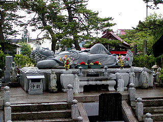

津軽化粧地蔵巡り
津軽化粧地蔵巡り/稲垣村以外の地域
津軽平野の中心を流れる岩木川の中流域の化粧地蔵を訪ねてみよう。 柏村下古川にて。白塗りが丁寧で完成度の高い地蔵である。この辺りにも十字前掛が見られる。 六地蔵の塗りが秀逸。衣の部分を塗っていないので遠目に見るとマッチ棒のように見える。 地蔵の横に建っていた絵馬。3つの山頂を持つ山と月と太陽。 木造町網代 ここの柱は特に派手だった。先端部は杉の枝のようなもので覆われその下に山の絵馬、で、その下はビニール紐で装飾されている。 100メートル先から「何かあるな」と思わせる。 で、その「何か」とはもちろん化粧地蔵なのである。ここも十字前掛率が非常に高い。 木造町川瀬 右の2体の大きな地蔵は恐らく身代わり地蔵で、地域を守る意味合いの地蔵なので地域共同で世話をするそうだ。 一般的に小さい地蔵は個人が身内、特に子供の供養のために建立するもので、化粧や衣装の着せ替えはそれぞれ持ち主が行なうはずなのだが、ここの地蔵は皆同じ衣装を着ている。当番制か何かで同じ人が作っているのだろうか。だとしたら衣装作りが大変そうだ。 木造町千代鶴 岩木川の土手にあった化粧地蔵。後生車と化粧地蔵の組み合わせは何とも侘びしい風景だ 木造町無量院。 これも岩木川沿いにある比較的大きな寺院。 山門の頂部が灯篭になっているのが珍しく寄ってみたら境内に立派な地蔵堂があった。 中には沢山の地蔵が。檀家の人達が奉納したものなのだろう。一画には弘法大師らしき石像があったが勿論メイクされてます。 十字の前掛がこれだけ揃うとイングランド代表！みたいな感じだ。 地蔵の一体一体に名前が書かれていた。 木造町船川 これも岩木川の土手沿い。百万遍の石碑、山の絵馬を掲げた柱、地蔵堂という黄金の組み合わせ。 地蔵は白塗りは少なく目鼻口の輪郭を線描したものがほとんどだった。 金木町蒔田 金木町に入ると何十体もまとめて祀る路傍の地蔵堂は少なくなってくる。 左は路傍の地蔵。2体タイプ。右は墓地にあった地蔵。複数なれど稲垣村のそれと比べると数は少ない。 金木町嘉瀬の町外れの小さな橋のたもとにあった地蔵堂。 道端にある地蔵堂には2体程度の地蔵しかおらず、チョット淋しかった。2体の地蔵は共同体で世話をしているのだろう。 個人が奉納する地蔵はどこにあるのか、というと・・・ 金木町祥雲寺 太宰治の生家のすぐ近くにある祥雲寺。太宰が子供の頃、ここの地獄絵を見てショックをうけたという素敵な寺。 境内には新しい大観音などがあり見どころは多いのだが、葬式の準備で忙しそうだったので、門前の地蔵堂だけ見て来た。 中央に閻魔像、両コーナーにやけに背の高い地蔵がいるがそれ以外はぜーんぶ化粧地蔵。 金木町で個人が地蔵を奉納する場合、こういった寺院の地蔵堂に奉納するのだろう。 特に金木にはこの祥雲寺の他に津軽最大の地蔵保有数を誇る川倉地蔵尊がある。 その濃密な詰まり具合にはひっくり返りそうな迫力があった。 稲垣ではあまり見かけなかったTシャツをルーズに着こなしたBボーイ系地蔵・・・な訳ないか・・・ 何故か化粧地蔵に混ざって市松人形などがあって無気味係数200％アップ。 五所川原市長圓寺 五所川原市の北にある比較的大きな寺。境内には4〜5メートル程の大観音と変わったポーズで寝ている寝釈迦があった。 寝釈迦の寝っぷりは三年寝太郎みたいで男っぽかったです。  境内にある地蔵堂。五所川原市も路傍の地蔵は2〜3体で個人奉納の地蔵はこうした寺院の地蔵堂に納められている場合が多いようだ。 五所川原市街にあった路傍の化粧地蔵。アンニュイな表情が印象的。 同じく五所川原市街にて。踏み切りのたもとにあった。地蔵堂より大きな百万遍の石碑が立派だ。 中には奇麗に塗られ着物を纏った化粧地蔵が。お供物をかたずけて下さい的な看板があった。 逆に言えばそれだけお供えをする人が多い、と言う事か。 弘前市小沢付近。弘前市街から久渡寺ヘ向かう道中。 正面の雨雲の合間に見える山がオシラサマで有名な久渡寺がある久渡寺山である。その道端にトタン張の地蔵堂が2つ建っている。 地蔵自体よりもお供物の量に驚いた。相当霊験あらたかなお地蔵さんなのだろう。
以上で津軽の化粧地蔵巡りはお終いである。 勿論、津軽に存在する化粧地蔵の総数はこんなもんじゃないのだが、まあ全体的な傾向が何とな〜く判ったので良しとしましょうか。 今回、巡ってみて判ったのは一口に化粧地蔵といっても様々な地蔵があるという事。 それは地蔵自体の化粧や衣装といった祀り方だけでなく、例えば個人で奉納する地蔵と共同体で建立する地蔵の違い、また、木像の地蔵の存在や十字前掛の存在なども確認出来た。 これらの傾向をまとめて結びにかえたいと思ったのだが・・・あまりまとまらず、むしろその多様性が特徴であるとしかまとめようがない。 この化粧地蔵巡りを始める前に漠然と思い浮かべた津軽の化粧地蔵のイメージは無気味なものでしかなかった。 しかしこうして多くの化粧地蔵を見ていると、無気味だった化粧地蔵が段々可愛らしく・・・などと思うはずもなく、やっぱり最後まで無気味だったのだが、ひとつだけ言えるのは毎年衣装や化粧を施し、供え物をあげ、線香や蝋燭を手向けるのはは大変な事だという事。 それを可能にしているのは地蔵を奉納した方々の篤い信仰心であり、子供を亡くした親の思いである。 そしてその信仰心や思いを育んで来たのは独特の歴史と風土を供えた津軽という土地柄であると思う。 ・・・こんな感じでまとまったでしょうか？
津軽化粧地蔵巡り稲垣村その１ 稲垣村その２
珍寺大道場 HOME